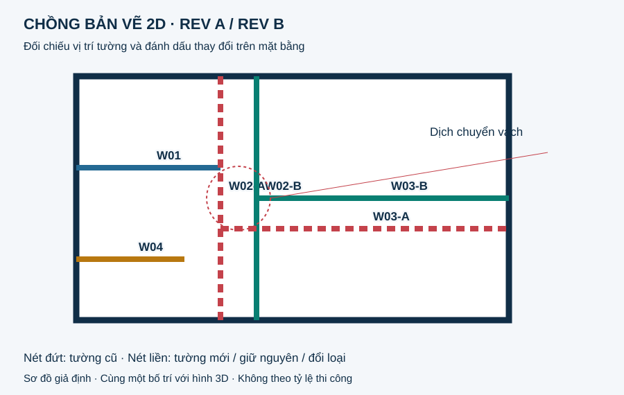
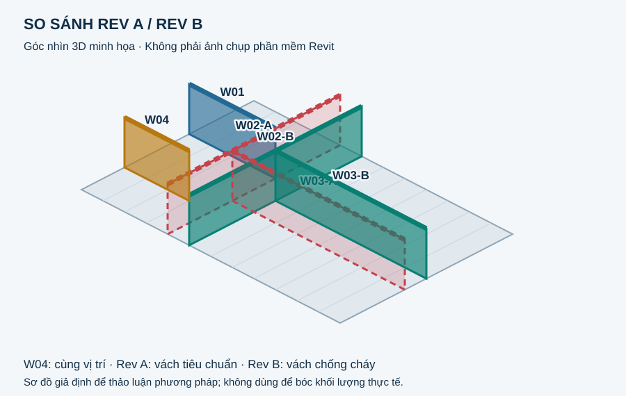

Đối chiếu trên bản vẽ 2D
Bạn mở hai phiên bản, đo lại, sketch, highlight và cập nhật bảng Excel. Khi trình bày, bạn phải lần theo từng vị trí để giải thích phần thay đổi và chứng minh các con số.

Một tuần sau khi hoàn thành bóc tách, bản vẽ GA được cập nhật. Bạn cần giải thích rõ phần nào giữ nguyên, phần nào thay đổi và vì sao khối lượng điều chỉnh.
Bạn nhận được hồ sơ thiết kế tường và vách ngăn bên trong công trình. Công ty giao bạn bóc tách, lập bảng khối lượng và chuẩn bị cơ sở giải trình để bảo vệ khối lượng trước khách hàng.
Bạn đã hoàn thành hồ sơ và trình bày kết quả. Một tuần sau, bản vẽ GA (General Arrangement — mặt bằng bố trí tổng thể) được cập nhật. Một số tường vẫn ở vị trí cũ; phần lớn được dịch chuyển, thay đổi cách bố trí hoặc công năng, kéo theo yêu cầu khác về loại vách và cấu tạo.
Sếp yêu cầu bạn so sánh hai phiên bản, xác định phần tăng giảm và trình bày lại với khách hàng. Thử thách lúc này là làm cho từng thay đổi dễ nhìn, dễ kiểm tra và có cơ sở đối chiếu.
Bạn mở hai phiên bản, đo lại, sketch, highlight và cập nhật bảng Excel. Khi trình bày, bạn phải lần theo từng vị trí để giải thích phần thay đổi và chứng minh các con số.

Đơn vị khác dùng mô hình 3D, phân loại tường và tô màu thay đổi, đi kèm bảng khối lượng có mã đối chiếu. Khách hàng nhìn thấy vị trí, phạm vi và cơ sở điều chỉnh trong cùng một hồ sơ.

Hình minh họa do TCA dựng cho tình huống giả định, không phải ảnh chụp Revit hoặc hồ sơ dự án thực tế. Các hình thể hiện cùng một bố trí; mô hình cần dữ liệu, quy tắc so sánh và bước kiểm tra phù hợp để nhận diện thay đổi.
| Mã đối chiếu | Thay đổi giữa Rev A và Rev B | Cơ sở cần trình bày |
|---|---|---|
| W01 · Giữ nguyên | Vị trí và loại vách không đổi. | Kiểm tra chiều cao, chiều dài, lỗ mở và phạm vi trước khi giữ lại khối lượng. |
| W02 / W03 · Dịch chuyển | Loại bỏ đoạn cũ, bổ sung đoạn mới theo GA cập nhật. | Đối chiếu mã, vị trí, loại vách; trình bày riêng khối lượng cũ, mới và chênh lệch. |
| W04 · Đổi loại | Cùng vị trí nhưng chuyển từ vách tiêu chuẩn sang vách có yêu cầu chống cháy trong ví dụ. | Kiểm tra cấu tạo, lớp vật liệu và đơn giá. Diện tích tương đương vẫn có thể dẫn đến giá trị khác. |
Phân biệt thay đổi thiết kế khi đấu thầu với khối lượng thi công: “loại bỏ” trong bảng so sánh không tự động có nghĩa là phát sinh công tác phá dỡ.
Bạn phân biệt tường giữ nguyên, dịch chuyển, thêm mới và đổi loại bằng cách nào? Làm sao phát hiện tường vẫn ở vị trí cũ nhưng cấu tạo đã khác?
Bạn tổ chức mã tường, loại vách, chiều cao, lỗ mở và bảng khối lượng ra sao để truy ngược được từ con số về vị trí trên mô hình?
Bạn sẽ dùng AI hỗ trợ chuẩn hóa dữ liệu, so sánh bảng khối lượng hay soạn phần giải trình? Bạn kiểm chứng đầu ra thế nào trước khi gửi khách hàng?
Một bên giải thích qua nhiều bản vẽ 2D và bảng tính. Một bên giúp bạn nhìn rõ thay đổi trên mô hình 3D, đối chiếu được khối lượng và hiểu cơ sở của từng điều chỉnh.
Ai đang tạo lợi thế thuyết phục hơn khi đấu thầu? Chất lượng trình bày và khả năng kiểm chứng giúp hồ sơ đáng tin cậy hơn; quyết định còn phụ thuộc vào giá, phạm vi chào thầu và năng lực thực hiện.
Trao đổi cách giải cùng TCATiếp tục Bài toán 02: Cầu thang thép D&CQuay lại các chương trình TCA